|
| Windown xp 用户设定DNS服务器的方法 |
| |
| 在Windows XP操作系统下， 请按"开始"；再选"设置"； 再到 "控制面板"，如图1中框中显示： |
| |
| 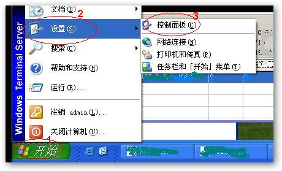 |
图1 "网上邻居"快捷图标 |
| |
| 选中"网上邻居"，双击左键（图2），打开"网络连接"窗口，如图3所示, |
| |
| 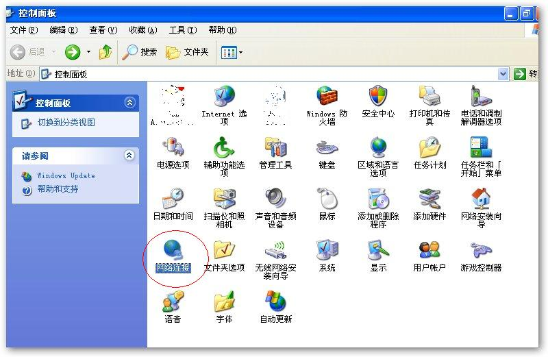 |
图2 属性 |
| |
| 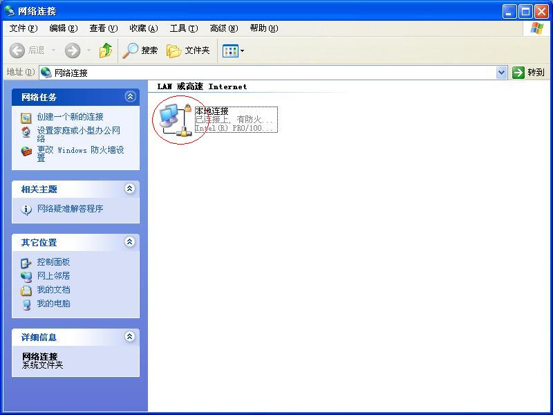 |
图3 网络连接 |
| |
| 用鼠标双击"本地连接",就出现了"本地连接 状态"窗口，如图4： |
| |
| 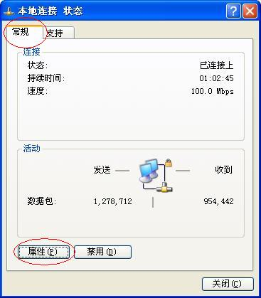 |
图4 本地连接 状态 |
| |
| 通过点击里面的"属性"按钮，出现"本地连接 属性"窗口，如图5所示： |
| |
| 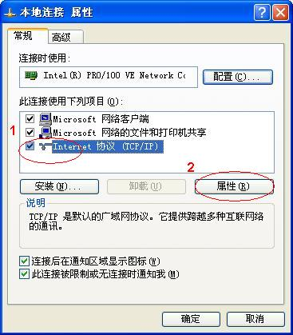 |
图5 本地连接 属性 |
| |
| 选中图5中"Internet协议(TCP/IP)"，点击右下方的"属性"，即，图5中"属性"按钮。这样就出现了"Internet协议(TCP/IP) 属性"窗体，如图6所示，在图中可以看到紅色框中，里面就是网络DNS服务器地址信息，只要我们更改为，图中所显示的地址，即：首选DNS服务器写为：8.8.8.8，备用DNS服务器为：8.8.4.4 |
| |
| 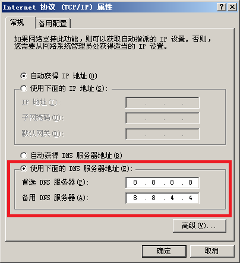 |
图6 修改DNS服务器地址 |
| |
修改完成后，只需要点击"确定"按钮所修改的DNS即生效，这样就完成了网络DNS修改的所有步骤。
备注：如果用户使用的Windows2000/2003等操作系统，和XP下修改方法基本一样，在这里就不再详细说明，只需按照以上的修改方法即可修改成功。 |
| |
|
|
|
Windows Vista、Win7设定DNS服务器的方法 |
| |
第1步 依序按下「开始」→ 「控制面板」，开启控制面板窗口后，单击「网络和共享中心」，开启网络设定窗口，如图1中框中显示：
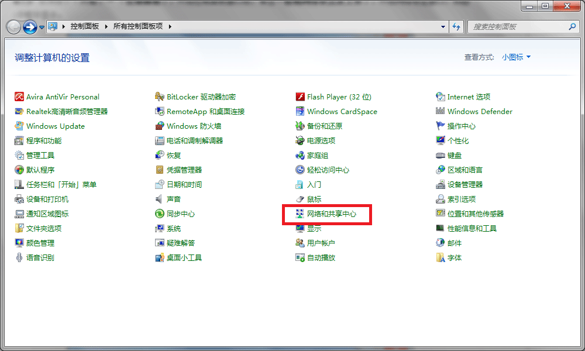
图1 "控制面板"
第2步单击「本地连接」。
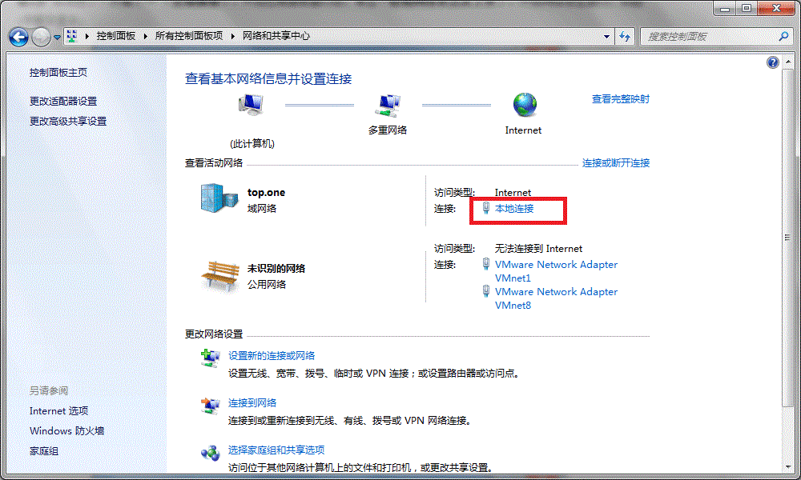
图2 网络和共享中心
第3步 在「本地连接状态」图示上按单击「属性」。
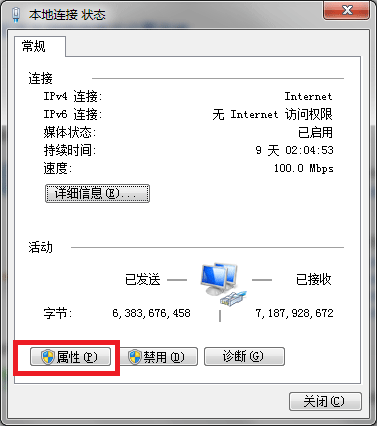
图3 本地连接状态
第4步 点选「Internet 协议版本 4 (TCP/IPv4)」，再按一下「属性」。
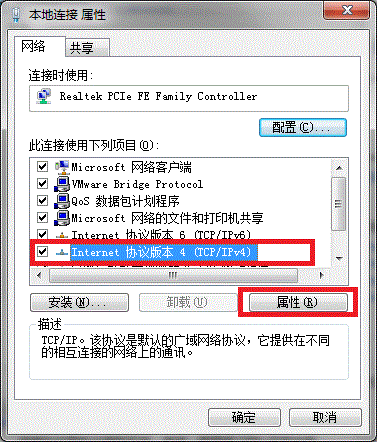
图4 本地连接属性
第5步 點選「使用下列的DNS伺服器位址」首选 DNS 服务器为：8.8.8.8，备用DNS服务器为：8.8.4.4，即可。
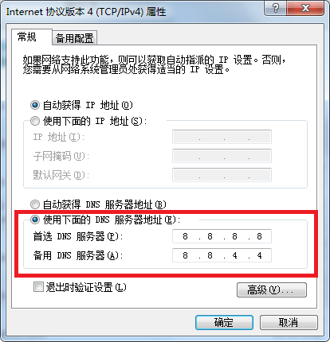
图5 修改DNS服务器地址
修改完成后，只需要点击"确定"按钮所修改的DNS即生效，这样就完成了网络DNS修改的所有步骤。 |
| |
| |